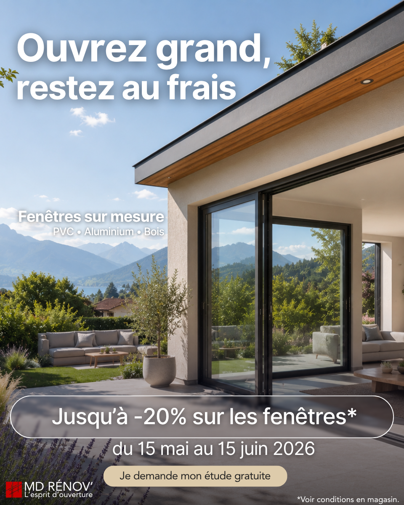
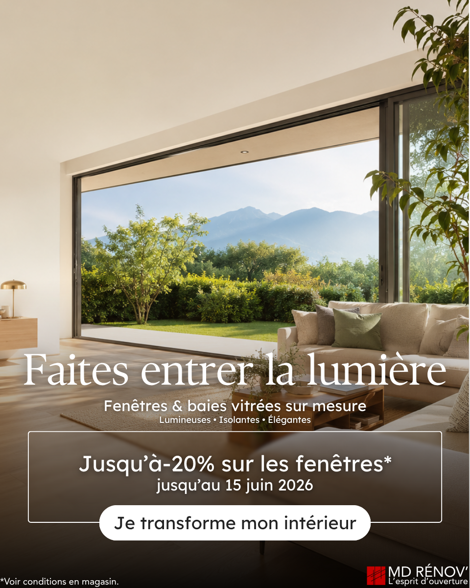
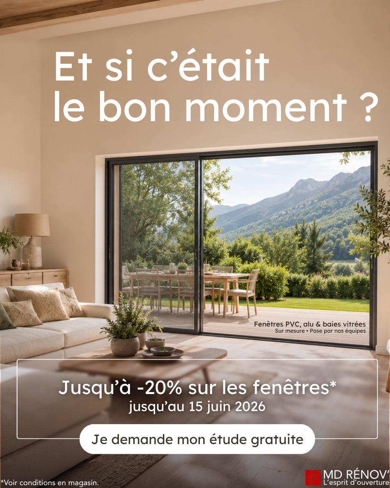

d'expertise locale
Offre fenêtres 2026
Ouvrez grand, gagnez en confort.
Remplacez vos fenêtres, baies vitrées ou portes-fenêtres avec une solution sur mesure pensée pour mieux isoler, laisser entrer la lumière et faciliter vos usages au quotidien. MD Rénov' vous conseille sur le matériau, le vitrage et la pose les plus adaptés à votre logement.
Jusqu'à -20%*
jusqu'au 15 juin 2026
Fin de l'offre dans
00
jours
00
heures
00
min
00
sec
* Étude gratuite et offre soumise aux conditions de l'offre.
- Fenêtres, portes-fenêtres et baies vitrées fabriquées sur mesure
- Conseil sur le vitrage, le matériau, les performances et le style
- Étude gratuite, devis détaillé et accompagnement local
4,3 / 5 sur 92 avis Google
Offre valable jusqu'au 15 juin 2026 • Showroom à Meythet • Pose en Haute-Savoie et Savoie

Service client
Accompagnement de A à Z et SAV réactif
Certification
RGE
pour aides à la rénovation
Environnement
Engagement environnemental FERVAM
Votre projet fenêtres
Des ouvertures sur mesure pour mieux isoler, mieux aérer et mieux vivre chaque pièce.
Un diagnostic pour chaque ouverture
Fenêtre de chambre, baie vitrée du séjour ou porte-fenêtre: chaque ouverture est étudiée selon ses dimensions, son exposition, son usage et les contraintes de pose.
Le bon matériau, sans choix au hasard
PVC, aluminium, bois ou solution mixte: nous comparons le rendu, l'entretien, les performances et le budget pour retenir une solution cohérente avec votre logement.
Une pose soignée et durable
Une menuiserie performante dépend aussi de la pose. L'installation est préparée pour préserver l'étanchéité, la lumière et un rendu propre côté intérieur comme côté façade.
Inspirations
Deux inspirations pour moderniser vos ouvertures sans perdre en confort.
Baies vitrées, grandes ouvertures ou fenêtres de pièces de vie: chaque projet peut gagner en luminosité, en isolation et en confort d'usage.


Des conditions claires
Une offre claire, avec une remise adaptée à la configuration réelle.
La remise peut aller jusqu'à -20%* selon les menuiseries, les dimensions, les matériaux et les options retenues. Vous disposez d'une date de fin claire et de conditions consultables à tout moment.
- Offre
- Jusqu'à -20%* sur les fenêtres
- Fin d'opération
- Jusqu'au 15 juin 2026
- Produits
- Fenêtres, baies vitrées et menuiseries sur mesure
- Zone
- Installation en Haute-Savoie (74) et Savoie (73)
- Étude
- Étude personnalisée gratuite et sans engagement
- Conditions
- Voir les conditions de l'offre
Pourquoi choisir MD Rénov'
Un accompagnement local pour éviter les choix approximatifs.
Conseil personnalisé
Nous partons de votre logement: exposition, usage de la pièce, confort recherché, style souhaité et contraintes techniques.
Étude sans engagement
L'étude permet de vérifier les dimensions, la faisabilité, les options utiles et le niveau de performance attendu avant d'établir un devis détaillé.
Présence locale
Vous échangez avec une équipe basée à Meythet, habituée aux projets en Haute-Savoie et en Savoie.
Notre accompagnement
Trois étapes simples pour avancer vers les bonnes fenêtres.
- Nous repérons les ouvertures prioritaires Votre projet est étudié selon les pièces concernées, les dimensions, l'exposition, l'état existant et vos usages au quotidien.
- Nous définissons la configuration adaptée PVC, aluminium, bois, vitrage et options utiles: la configuration est choisie pour répondre à votre besoin réel, à votre budget et au rendu souhaité.
- Nous planifions l'installation Une fois votre projet validé, la pose est organisée selon les délais de fabrication et le planning d'intervention.
Voix clients
Des retours clients qui parlent surtout de sérieux et de soin.
Note Google actuelle : 4,3 / 5 sur 92 avis.
“Conseils clairs, respect des délais et résultat très bien. La pose a été précise et la fin de chantier propre.”
“Entreprise sérieuse et au service du client. Professionnels à l'écoute, efficacité d'intervention et nettoyage irréprochable.”
“Prestation impeccable du début à la fin: bon conseil commercial, respect des délais, pose soignée et netteté.”
Prendre rendez-vous
Parlez-nous de vos ouvertures, même si le projet n'est pas encore cadré.
Réservez un créneau en ligne, appelez l'équipe ou passez au showroom de Meythet. Nous vous aidons à clarifier les priorités, les matériaux et les prochaines étapes.
Itinéraire
Retrouvez-nous à Meythet.
62 Route de Frangy, 74960 Meythet - Annecy
Me rendre au magasinFAQ fenêtres
Les questions que l'on se pose avant de changer ses fenêtres.
Quel est le prix pour remplacer des fenêtres sur mesure ?
Le prix dépend surtout du nombre d'ouvertures, des dimensions, du matériau, du vitrage, des options et de la complexité de pose. Une fenêtre standard en PVC n'aura pas le même budget qu'une grande baie vitrée aluminium ou qu'une menuiserie avec vitrage renforcé. L'étude gratuite permet de mesurer les ouvertures, vérifier les contraintes et établir un devis précis.
PVC, aluminium, bois ou mixte : quel matériau choisir ?
Le PVC est souvent choisi pour son bon rapport isolation/prix, l'aluminium pour les grandes ouvertures et les lignes fines, le bois pour son aspect chaleureux, et le mixte pour combiner esthétique et performance. Le bon choix dépend de l'exposition, du style de la maison, de l'entretien souhaité, du budget et du niveau d'isolation attendu.
Changer mes fenêtres améliore-t-il vraiment l'isolation ?
Oui, si la fenêtre actuelle laisse passer le froid, la chaleur, le bruit ou présente des défauts d'étanchéité. Le gain dépend du vitrage, du matériau, de la performance de la menuiserie et surtout de la qualité de pose. Une bonne configuration peut améliorer le confort thermique, limiter les sensations de paroi froide et réduire certaines nuisances sonores.
Existe-t-il des aides pour changer ses fenêtres ?
Certaines aides peuvent exister selon le logement, les revenus, le type de vitrage remplacé, la performance des nouvelles fenêtres et le cadre global des travaux. Les règles évoluent et dépendent souvent du dossier complet. L'équipe MD Rénov' peut vous aider à identifier les points à vérifier avant de valider le projet.
L'étude et le devis sont-ils gratuits ?
Oui. L'étude personnalisée et le devis sont gratuits et sans engagement. Ils servent à comprendre votre besoin, mesurer ou analyser les ouvertures, repérer les contraintes de pose, comparer les solutions possibles et chiffrer clairement le projet avant toute décision.
Votre projet
Profitez de l'offre en cours pour cadrer votre projet fenêtres.
Étude gratuite, conseil sur mesure et installation en Haute-Savoie (74) et Savoie (73).
* Voir conditions en magasin et conditions de l'offre.